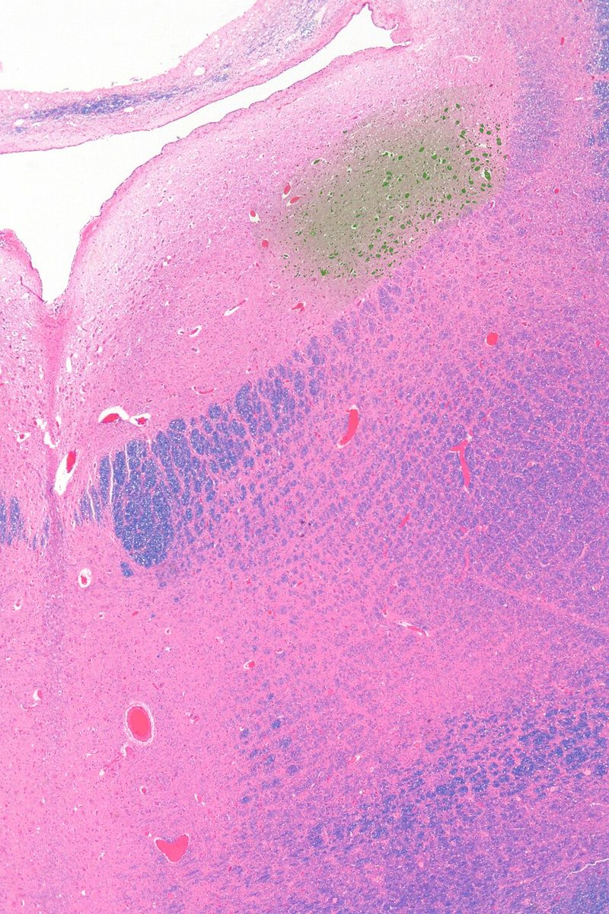

청반 (locus coeruleus)

쉽게 풀면
청반은 건물 전체의 조명을 한꺼번에 켜고 끄는 중앙 스위치 박스에 비유할 수 있다. 크기는 쌀알만큼 작지만, 여기서 뻗어 나온 신경 가지는 대뇌피질, 해마, 소뇌 등 뇌의 거의 모든 영역에 도달한다.
위험하거나 놀라운 상황을 만나면 청반이 빠르게 활성화되어 노르아드레날린을 뇌 곳곳에 뿌리는데, 이렇게 되면 뇌 전체가 "지금 집중해야 할 때"라는 신호를 받고 각성 수준을 높인다. 반대로 청반의 활동이 줄어들면 졸음이 오거나 주의가 흐트러진다.
왜 중요한가
청반-노르아드레날린 시스템은 각성, 주의, 스트레스 반응, 인지 유연성 등 여러 상위 연구 주제를 관통하는 핵심 축이기 때문에 신경과학 논문에서 폭넓게 다뤄진다. 특히 노화나 알츠하이머병 초기에 청반의 신경세포가 먼저 손상되는 것으로 알려져 있어, 퇴행성 뇌질환 연구에서도 중요한 표적으로 주목받고 있다. 또한 동공 크기 변화라는 비침습적 지표로 청반 활동을 간접적으로 추정할 수 있어, 인간 대상 인지 실험에서도 활용도가 높다.
어디에 있고 어떻게 생겼나
- 청반은 뇌교(다리뇌) 위쪽, 제4뇌실 바닥 가까이에 양쪽으로 하나씩 있는 작은 신경핵이다. 이름은 “푸른 장소”라는 뜻으로, 뉴런에 든 신경멜라닌 색소 때문에 푸르스름하게 보인다.
- 이곳의 뉴런은 노르에피네프린(노르아드레날린)을 쓴다. 청반은 뇌에서 노르에피네프린을 가장 많이 공급하는 곳으로, 한 뉴런의 축삭이 대뇌피질·해마·소뇌·척수까지 넓게 뻗는다(Berridge & Waterhouse, 2003).
- 작은 핵이지만 투사 범위가 매우 넓어 소수의 뉴런이 뇌 전체의 상태에 영향을 줄 수 있다는 점이 특징이다.
청반 뉴런은 대부분 중간 크기이며, 노르에피네프린이 중합해 만들어진 신경멜라닌 과립 때문에 푸른빛을 띤다. 도파민에서 유래한 검은 신경멜라닌을 가진 흑질과 비슷한 원리이다. 성인 남성의 청반에는 색소를 띤 뉴런이 22,000~51,000개 있다. 투사는 척수, 뇌간, 소뇌, 시상하부, 해마, 시상, 편도체, 대뇌피질까지 매우 넓게 퍼진다.
청반은 뇌교 뒤쪽 위부분, 제4뇌실 바닥의 가쪽에 있으며 뇌에서 노르에피네프린 합성이 일어나는 주된 장소이다. 성인 남성에서 색소를 가진 뉴런의 총수는 약 22,000~51,000개로 보고된다. 푸른색은 노르에피네프린이 중합해 생긴 신경멜라닌 때문이다. 출력은 편도체, 해마, 피질, 시상, 시상하부, 소뇌, 뇌줄기, 척수, 중뇌덮개, 배쪽 피개 영역에 닿고, 노르에피네프린은 뇌의 대부분에 흥분 효과를 주어 각성을 매개한다. 입력은 내측 전전두엽, 외측 시상하부(오렉신), 대상회, 편도체, 솔기핵 등에서 온다.
맡은 기능
- 각성과 수면-각성 주기: 깨어 있을 때 활발하고, 수면 중에 줄며, 렘수면 중에는 거의 멈춘다(Aston-Jones & Bloom, 1981).
- 주의와 과제 수행: Aston-Jones와 Cohen(2005)의 적응적 이득 이론은 두 활동 모드를 구분한다. 과제에 집중할 때는 중요한 자극에 순간적으로 반응하는 위상성 모드, 주의가 산만하고 새로운 자극을 탐색할 때는 기저 발화가 높은 긴장성 모드가 나타난다고 본다.
- 스트레스 반응: 위협과 스트레스에 반응하며 HPA 축, 편도체 등과 연결된다.
- 기억과 학습: 노르에피네프린은 감정이 실린 기억의 저장에 영향을 주는 것으로 연구된다(Sara, 2009).
- 질환 연관성: 알츠하이머병과 파킨슨병에서 병리 변화와 뉴런 손실이 비교적 이른 시기에 청반에서 보고된다. 다만 이것이 질병의 원인인지 초기 지표인지는 연구가 진행 중이다.
수용체 수준에서 α2 수용체는 작업기억을 돕고, 노르에피네프린이 과다하면 친화도가 낮은 α1 수용체에 작용해 작업기억을 해칠 수 있다. 청반은 스트레스로 활성화되어 노르에피네프린을 늘리고 시상하부–뇌하수체–부신 축과 교감 신경 출력을 가동한다. 아편계 약물은 청반의 발화를 억제하고 금단 때는 발화가 늘어난다.
연구에서 다루는 방식
- 동물 연구: 노르에피네프린 합성 효소(티로신 수산화효소, 도파민 β-수산화효소) 표지로 청반 뉴런을 식별하고, 광유전학이나 약리학적 방법으로 활동을 조작한다.
- 사람 연구: 신경멜라닌 민감 MRI로 청반 신호를 보고, 동공 크기를 청반 활동의 간접 지표로 쓰는 연구가 있다. 동공은 다른 요인에도 영향을 받으므로 대리 지표로서의 한계가 논쟁된다.
- 논문에서 주의할 점: 청반은 크기가 작아 영상에서 위치 지정 오류가 생기기 쉽다. 영역 정의 방법과 해상도를 밝혀야 한다.
청반은 파킨슨병, 진행성 핵상마비, 픽병, 알츠하이머병, 다운증후군 같은 신경퇴행성 질환에서 손상되며, 알츠하이머병에서는 청반 뉴런의 최대 80%가 사라진다는 보고가 있다. 우울증, 공황장애, 불안, ADHD 연구에서도 다루어지며, 노르에피네프린 재흡수 억제제(아토목세틴 등)나 세로토닌·노르에피네프린 재흡수 억제제의 작용과 관련지어 연구된다.
신경퇴행성 질환에서는 파킨슨병, 진행성 핵상 마비, 픽병, 알츠하이머병, 다운증후군에서 청반이 영향을 받는다. 알츠하이머병에서는 청반 뉴런이 최대 80%까지 소실된다고 보고되고, 신경섬유 매듭이 증상이 나타나기 수십 년 전부터 이곳에 생길 수 있다. 우울증, 공황장애, 불안과의 연관도 논의된다.
논문에서는 이렇게 쓰입니다
실제 논문에서
이 용어를 직접 쓴 국내 논문 문장은 아직 모으지 못했다. 모이는 대로 출처와 함께 싣는다.
예시 문장
아래 예문은 용어의 쓰임을 보이려고 만든 것으로, 실제 논문 문장이 아니다.
이런 문장은 각성과 주의력 연구에서 청반의 활동을 신경 영상이나 동공 크기(청반 활동과 연동되는 것으로 알려진 지표) 변화로 측정하여, 각성 수준이 인지 수행에 미치는 영향을 분석할 때 등장한다.
퇴행성 뇌질환 연구에서는 청반이 다른 뇌 영역보다 먼저 손상되는 경향이 있어, 이를 조기 진단이나 질병 진행 경과를 파악하는 단서로 활용할 수 있다는 의미이다.
스트레스 연구에서는 청반의 신경 활동 패턴 변화를 동물 모델의 행동 변화(불안 유사 행동 등)와 연결지어, 스트레스가 각성 조절 시스템에 미치는 영향을 분석한다는 뜻이다.
조금 더 깊게 보면
청반의 활동은 긴장성(tonic) 활동과 위상성(phasic) 활동으로 구분되는데, 적당한 긴장성 활동 수준에서 과제와 관련된 자극에 위상성으로 반응할 때 인지 수행이 가장 좋다는 역U자형 관계가 제안되어 있다. 인간 연구에서는 청반을 직접 측정하기 어렵기 때문에 동공 크기 변화나 뇌파, 기능적 자기공명영상(fMRI)의 뇌간 신호를 간접 지표로 활용하는 경우가 많으며, 최근에는 고해상도 신경영상 기법으로 청반 신호 강도(neuromelanin-sensitive MRI 등)를 정량화하려는 시도도 이루어지고 있다.
주의할 점
청반은 노르아드레날린을 분비하는 주된 부위이지만, 도파민을 분비하는 복측피개영역이나 흑질과는 신경전달물질과 담당 기능이 다르다. 셋 다 뇌간의 작은 신경핵이라는 공통점 때문에 혼동하기 쉽지만, 각성(청반), 보상(복측피개영역), 운동(흑질)으로 역할이 구분된다는 점을 기억해야 한다.
헷갈리기 쉬운 용어
뇌간의 작은 신경핵 가운데 신경전달물질이 달라 구분이 필요한 구조들이다.
참고 문헌
- Aston-Jones, G., & Bloom, F. E. (1981). Activity of norepinephrine-containing locus coeruleus neurons in behaving rats anticipates fluctuations in the sleep-waking cycle. Journal of Neuroscience, 1(8), 876–886.
- Aston-Jones, G., & Cohen, J. D. (2005). An integrative theory of locus coeruleus-norepinephrine function: adaptive gain and optimal performance. Annual Review of Neuroscience, 28, 403–450.
- Berridge, C. W., & Waterhouse, B. D. (2003). The locus coeruleus–noradrenergic system: modulation of behavioral state and state-dependent cognitive processes. Brain Research Reviews, 42(1), 33–84.
- Sara, S. J. (2009). The locus coeruleus and noradrenergic modulation of cognition. Nature Reviews Neuroscience, 10, 211–223.
- Wikipedia contributors. (n.d.). Locus coeruleus. In Wikipedia, The Free Encyclopedia.
- Wikipedia contributors. (n.d.). Locus coeruleus. In Wikipedia, The Free Encyclopedia.
표의 기준값은 위 문헌에 따른 관례이고, 분야·학술지마다 기준이 다를 수 있다.